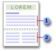

Section
Définition :
Vous pouvez utiliser les sections pour modifier la mise en page d'un document à l'intérieur d'une page ou d'un groupe de pages.

Application du format « une colonne » à une section
Application du format « deux colonnes » à une section
Il vous suffit d'insérer des sauts de section pour diviser le document en sections, et d'appliquer ensuite la mise en forme voulue à chaque section. Choisissez le format « une colonne » pour la section qui constituera l'introduction d'un état et sélectionnez le format « deux colonnes » pour la section suivante, dans laquelle apparaîtra le corps du texte, par exemple.
Vous pouvez modifier les formats de section suivants :
Marges
Taille ou orientation du papier
Alimentation papier pour une imprimante
Bordures de page
Alignement vertical
En-têtes et pieds de page
Colonnes
Numérotation des pages
Numérotation des lignes
Notes de bas de page et notes de fin